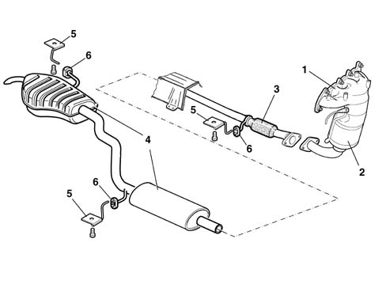
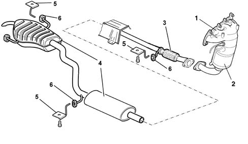
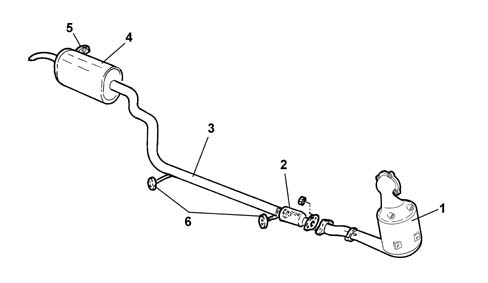

Introduction - EXHAUST PIPES AND SILENCERS
- Path
- Descriptions > 10 ENGINE > 1076 EXHAUST PIPES AND SILENCERS > Introduction - EXHAUST PIPES AND SILENCERS
- Kind
- system description
- Applies to
- all engines; all production periods
- Interactive page
- https://sloeber94.github.io/elrnDB-lYpsln/en/#/2429835
Applies to: engines: 1.2 8v; all production periods; only with equipment: Euro 3
The engine exhaust gases flow through manifold (1) to the three-way catalytic converter (2) (see 1080).
At the front of the exhaust pipe, there is a flexible component (3) for limiting the transmission of vibrations.
The rear exhaust section comprises two silencers (4).
Special guards limit the radiation of heat towards the bodyshell.
The various components are supported by mountings (5) and rubber rings (6) secured to the underbody.

Applies to: engines: 1.2 16v; all production periods; only with equipment: Euro 3
The engine exhaust gases flow through manifold (1) to the three-way catalytic converter (2) (see 1080) to which the exhaust pipe is connected by means of a flange.
At the front of the exhaust pipe, there is a flexible component (3) for limiting the transmission of vibrations.
The rear exhaust section comprises two silencers (4).
Special guards limit the radiation of heat towards the bodyshell.
The various components are supported by mountings (5) and rubber rings (6) secured to the underbody.

Applies to: engines: 1.4 16v; all production periods
The engine exhaust gases flow through manifold (1) to the three-way catalytic converter (2) (see 1080) to which the exhaust pipe is connected by means of a flange.
At the front of the exhaust pipe, there is a flexible component (3) for limiting the transmission of vibrations.
The rear exhaust section comprises two silencers (4).
Special guards limit the radiation of heat towards the bodyshell.
The various components are supported by mountings (5) and rubber rings (6) secured to the underbody.
Applies to: engines: 1.3 JTD; all production periods
Structure
The engine exhaust gases flow through the manifold to the turbocharger and then to the oxidizing catalytic converter (1) 1080B exhaust emission control system
At the front of the exhaust pipe, there is a flexible component (2) for limiting the transmission of vibrations.
The rear section of the exhaust pipe consists of an intermediate pipe (3) and the rear silencer (4).
Special guards limit the radiation of heat towards the bodyshell.
The various components are supported by mountings (5) and rubber rings (6) secured to the underbody.
